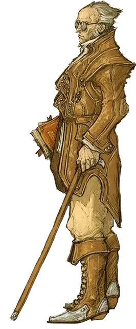

Риктавио
Rictavio
Средний Гуманоид (Человек), законно-добрый, именной НИП

Класс Доспеха 12 (кожанный доспех)
Хиты 77 (14к8 + 14)
Скорость 30 футов
| мод | спас | ||
|---|---|---|---|
| СИЛ | 9 | −1 | −1 |
| ЛОВ | 12 | +1 | +1 |
| ТЕЛ | 13 | +1 | +4 |
| мод | спас | ||
|---|---|---|---|
| ИНТ | 16 | +3 | +3 |
| МДР | 18 | +4 | +7 |
| ХАР | 16 | +3 | +3 |
Навыки Восприятие +7, Ловкость рук +4, Магия +9, Медицина +7, Проницательность +7, Религия +6
Чувства пассивное Восприятие 17
Языки Общий, Бездны, Инфернальный, Эльфийский
Опасность 5 (1800 опыта)
Бонус мастерства +3
Особенности
Специальное снаряжение. В дополнение к своему мечу-трости, у Риктавио есть шапка маскировки [hat of disguise], кольцо защиты разума [ring of mind shielding] и свиток заклинания оживление [scroll of raise dead].
Использование заклинаний. Риктавио является заклинателем 9-го уровня. Его базовой характеристикой является Мудрость (Сл спасброска от заклинания 15, +7 к попаданию атаками заклинаниями). У Риктавио подготовлены следующие заклинания жреца:
• Заговоры (неограниченно): указание [guidance], свет [light], починка [mending], чудотворство [thaumaturgy]
• 1-й уровень (4 ячейки): лечение ран [cure wounds], обнаружение зла и добра [detect evil and good], защита от зла и добра [protection from evil and good], убежище [sanctuary];
• 2-й уровень (3 ячейки): гадание [augury], малое восстановление [lesser restoration], защита от яда [protection from poison];
• 3-й уровень (3 ячейки): магический круг [magic circle], снятие проклятия [remove curse], разговор с мёртвыми [speak with dead];
• 4-й уровень (3 ячейки): защита от смерти [death ward], свобода перемещения [freedom of movement];
• 5-й уровень (1 ячейка): рассеивание зла и добра [dispel evil and good];
Истребитель нежити. Когда Риктавио попадает по Нежити атакой с помощью оружия, Нежить получает дополнительные 10 (3к6) урона того же вида, что и у оружия.
Черты Риктавио.
Идеал. «Злу не остаться безнаказанным».
Привязанность. «Чтобы защитить своих любимых, я должен удалиться от них и прятать от своих врагов».
Слабость. «Я проклят. И мне никогда не обрести покой».
Действия
Мультиатака. Риктавио совершает две атаки с помощью своего Меча-трости.
Меч-трость. Рукопашная атака оружием: +4 к попаданию, досягаемость 5 футов, одна цель. Попадание: 4 (1к6+1) дробящего урона (деревянной тростью) или колющего урона (посеребренным мечом).
Описание
Несколько месяцев назад, в карнавальном фургоне в Баровию приехал красиво разодетый бард полуэльф с ручной обезьянкой на плече. Прежде чем появится в городе Валлаки, он занял заброшенную башню близ Озера Бараток. Утверждая окружающим, что занимается поиском новых актеров, он начал потчевать местное население рассказами о далеких странах.
Охотник на монстров. На самом деле, полуэльф импресарио является легендарным охотником на вампиров Рудольфом ван Рихтеном [Rudolph van Richten]. История ван Рихтена очень печальна. Ученый и доктор с острова Даркон [Darkon] – он женился на своей юношеской возлюбленной Ингрид и у них родился сын по имени Эразмус. Когда Эразмусу было четырнадцать его украли вистани, и продали его вампиру по имени Барон Метус [Baron Metus], чтобы тот использовал его в качестве слуги. К тому моменту, когда ван Рихтен нашел своего сына было уже поздно – барон превратил Эразмуса в вампира. Эразмус умолял отца окончить его страдания, и ван Рихтен вогнал деревянный кол ему в сердце. В отместку Барон Метус убил жену ван Рихтена, и тому пришлось жить с осознанием того, что вся его семья уничтожена. После смерти Барона Метуса от его рук, ван Рихтен посвятил свою жизнь поиску вистани и охоте на злых монстров.
Выжидание. Ван Рихтен уже не молод. Он знает, что хоть его работа еще не окончена, путь его подходит к концу. Он приехал в Баровию, чтобы убить Страда фон Заровича – величайшего из всех вампиров. Ван Рихтен изучал Страда годами, и понимает, что в прямом противостоянии не сможет его одолеть. Он должен дождаться подходящего момента и нанести удар. У него есть веские доказательства того, что пока в его царстве все спокойно, Страд впадает в своему гробу в спячку – иногда на целые годы. В это время ван Рихтен прячется у всех на виду с помощью шапки маскировки [hat of disguise] и защищает мысли с помощью кольца защиты разума [ring of mind shielding]. Он пытается узнать больше о Хранителях Пера – обществе верворонов, которые противостоят Страду. При этом стараясь не раскрывать их тайное общество пред общим врагом. Он считает, что когда придет время, вервороны могут оказаться полезны. Также ван Рихтен хочет завербовать как можно больше шпионов Страда, начиная со злых вистани.
Человек с Планом. Ван Рихтен не знает того, что его бывшая ученица – вистани доброго мировоззрения по имени Эсмеральда Д’Авенир вернулась в Баровию и ищет его. И хоть он научил её многим методам охоты на монстров, она не знает всех его трюков и личин. До сих пор они не пересекались. Если же ван Рихтен узнает о присутствии здесь Эсмеральды, то он сделает все от него зависящее, чтобы защитить её и при этом не поставить свои планы под угрозу. Если он сможет убедить группу приключенцев следить за ней, то непременно сделает это.
Ван Рихтен работает один. Проклятье, когда-то наложенное на него провидцем вистани, сулит гибель любому, с кем он сойдется. Более того, он считает, что большое количество переменных поставит его план под еще больший риск. Если он уверен, что ему грозит разоблачение, то отступает в свою башню (смотри главу 11), и в какой-нибудь другой тихий уголок в домене Страда.